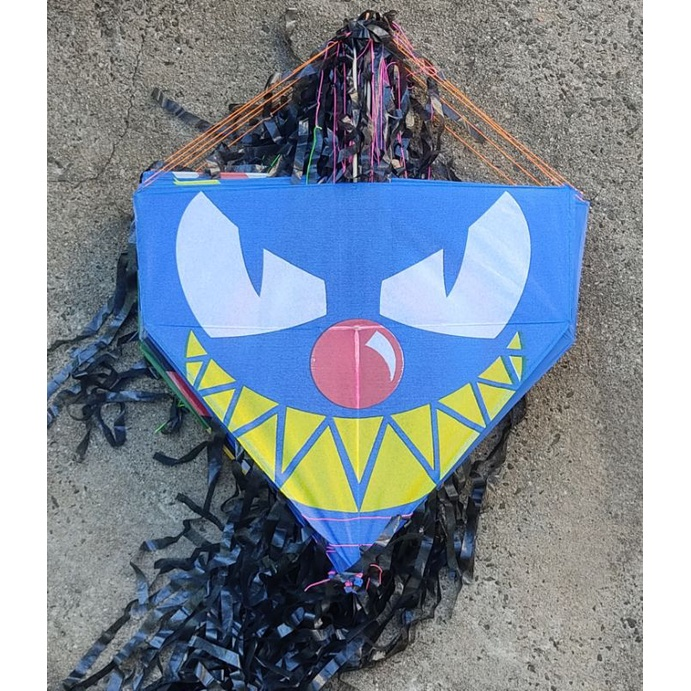

Exemplos de textos
Futebol

O futebol é um esporte cujo campo de grama apresenta 105 metros de comprimento por 68 metros de largura, uma padronização da Fifa. Duas equipes compostas por 11 jogadores disputam uma partida em que o objetivo é marcar o máximo possível de gols.
Pipa
Papagaio de papel; brinquedo feito por uma armação com varetas de madeira, encapadas por um papel fino que, presa por uma linha, é sustentada no ar pelo vento.
Savegnago
O Savegnago Supermercados, a Rede Forte do Interior, inaugurou sua primeira loja em agosto de 1976, na cidade de Sertãozinho, interior de São Paulo. O senhor Aparecido Savegnago, pensando em unir a família ao trabalhar com seus filhos, comprou a loja que deu início ao sonho.